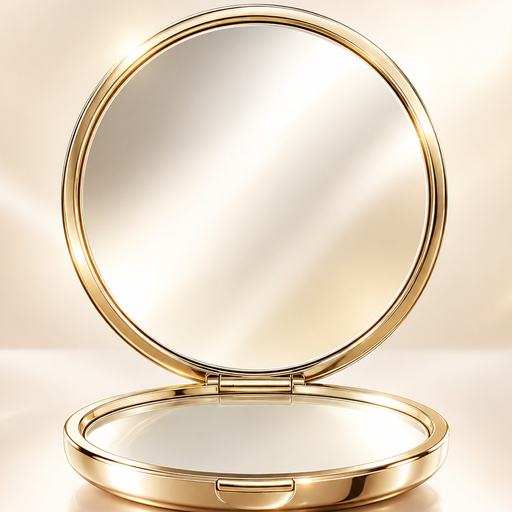

Glow Mirror
iPhone · iPad
すぐ起動、
4K高画質ミラー。
開いた瞬間から鏡。画面に触れても誤作動せず、押した瞬間で止まる静止画、10秒動画で後ろ姿までチェックできます。身だしなみも、メイクも、これひとつで。
Features
鏡として、
いちばん使いやすく。
毎日のちょっとした身だしなみチェックから、髪型やメイクの仕上げまで。
01 · Instant
開いた瞬間から鏡
起動してすぐに鏡が映ります。4K対応の高画質で、まつげや眉の細かいところまで。
02 · No mistouch
触れても誤作動しない
画面のどこに触れても何も起きません。手に持ったままでも、勝手に撮影されることはありません。
03 · Freeze
押した瞬間で止まる
静止画ボタンを押すと、その瞬間の顔で止まります。拡大、左右の反転、そのまま保存も。
04 · 10 sec video
後ろ姿は10秒動画で
ゆっくり顔を動かして録画。スロー再生とコマ送りで、横顔や後ろ髪まで確かめられます。
05 · Before / After
ビフォーアフターとパラパラ
2枚を並べて比べたり、スライダーで見比べたり。3〜10枚の写真はパラパラ動画に。顔や背景はぼかせます。
06 · Your layout
ボタンは自分好みに
下に出すボタンを入れ替えられます。反転やライトの状態で起動する設定も。わからなくなったら「リセット」で元どおり。
Privacy by design
あなたの顔は、
あなたの端末の中だけ。
鏡アプリだからこそ、安心して使えることを大切にしました。
01
映像を外に送らない
カメラの映像や写真を、開発者や外部のサーバーに送ることはありません。
02
勝手に撮らない
撮影はボタンを押した時だけ。シャッター音もなく、周りを気にせず使えます。
03
保存しない設計
静止画や動画は、保存ボタンを押した時だけ写真に残ります。閉じれば消えるので、容量も増えません。
Price
すべての機能が無料。
鏡・静止画・10秒動画・ビフォーアフターまで、すべての機能を無料でお使いいただけます。広告は、鏡を使っている最中の邪魔にならない場所にだけ表示します。
広告を消す · 買い切り
¥200
- 一度の購入で、アプリ内の広告がすべて消えます
- サブスクリプションではありません
- 機種変更しても「設定 › 購入を復元」で戻せます